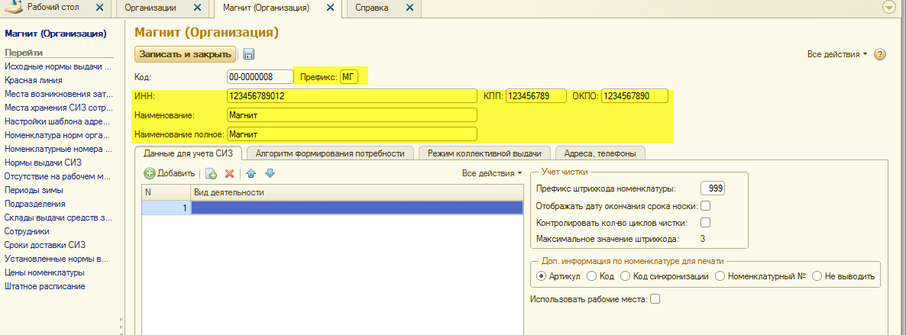
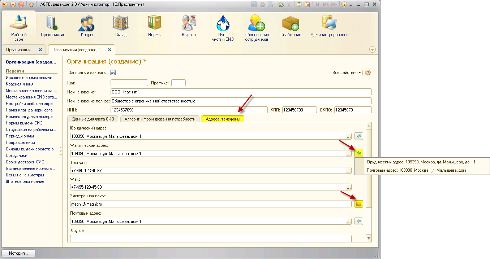
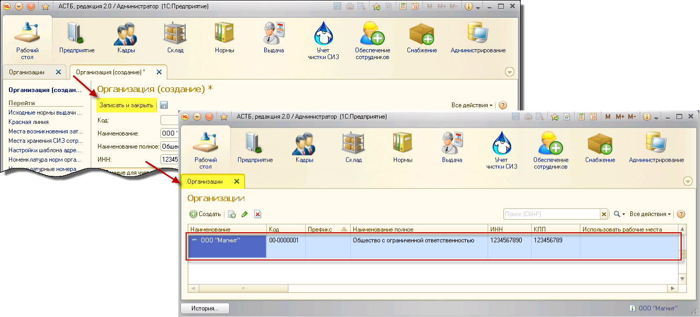

Заполнение справочника «Организации» предполагает создание организации. Чтобы создать организацию, зайдите в меню «Предприятие», раздел «Организации» и нажмите на кнопку «Создать».
Откроется окно «Организация (создание)», в котором следует ввести первичные данные организации (Наименование, ИНН, КПП, ОКПО).
Также существует возможность указать префикс, 2 символа, с которых будут начинаться номера документов, что будет удобно в случае ведения нескольких организаций в базе.

Во вкладке «Данные для учета СИЗ» необходимо указать:
1. Учет чистки
1.1. Префикс штрихкода номенклатуры - начальные цифры штрихкода, префикс должен состоять из 3-х цифр и быть уникальным для каждой организации.
1.2. Отображать дату окончания срока носки - этот реквизит определает, выводить ли на этикетку дату окончания срока носки СИЗ.
1.3. Контролировать кол-во циклов чистки - позволяет отслеживать количество циклов чистки СИЗ. При проставленном флажке, если попытаться добавить СИЗ в чистку большее количество раз, чем указано в карточке номенклатуры, документ проведется, но выдаст сообщение о превышении количества циклов чистки. Если данный флажок не проставлен, контроля над кол-вом чисток не будет.
1.4. Максимальное значение штрихкода - здесь отображается максимальный номер штрихкода, созданный в программе на данный момент. С каждым новым штрихкодом значение в этом поле меняется.
2. Использовать рабочие места – флажок устанавливается в случае ведения учета спецодежды и СИЗ непосредственно через аттестацию рабочих мест.
3. Доп. информация по номенклатуре для печати - влияет на подстановку значения в печатной форме помимо наименования номенклатуры. Возможные значения:
· Артикул;
· Код;
· Код синхронизации;
· Номенклатурный №;
· Не выводить.
Во вкладке «Адреса, телефоны» рекомендуется заполнить контактные данные, в дальнейшем они могут потребоваться при печати документов.

Для удобства в данной вкладке предусмотрены кнопки:
Кнопка «Заполнить адрес из другого поля»;
Кнопка «Написать письмо».
Когда нужные поля будут заполнены, нажмите кнопку «Добавить».
После ввода всех необходимых данных по организации нажмите кнопку «Записать и закрыть», тем самым сохранив введенные данные, и в таблице появится созданная организация.

Примечание: обязательными для заполнения являются поля, подчеркнутые красным пунктиром.